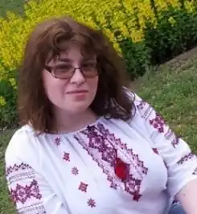

Березіна Дарина Юріївна народилася 19 червня 1982 року в Миколаєвi. Закінчила гуманітарну гімназію №2, факультет іноземної філології Чорноморського національного університету ім. Петра Могили (2004 рік). Протягом шести років працювала викладачем англійської мови і філологічних спецкурсів в цьому ж навчальному закладі (2004-2010), зараз співпрацює з видавництвами як перекладач художньої літератури.
Авторка декількох наукових статей про особливості трансформації євангельского міфу в сучасній літературі, фанфікшн як явище мережевої літератури.
Почала писати в підлітковому віці. З 1997 року – членкиня літературної студії "Секрет" при обласній бібліотеці для дітей імені В. Лягіна, керівником якої на той час була поетеса, член НСПУ Катерина Олександрівна Голубкова. У 2007-2011 роках – керівник літературної студії "Секрет". Поетичні та прозові твори виходили друком у місцевій пресі, обласних та республіканських альманахах та антологіях, мережі Інтернет. Автор збірки поезій та прози "Камера схову" (Київ: Гопак, 2004), збірки поезій "Всього лише серпень" (Львів: Каменяр, 2006), збірки ліричних мініатюр "Мимо жанру" (Миколаїв: Видавництво Ірини Гудим, 2010), роману "Факультет" (Київ: Смолоскип, 2017). Дипломант Всеукраїнського фестивалю поезії "Молоде вино" (2002) та Всеукраїнського конкурсу оповідання "Що записано в Книгу Життя" (2003). Дипломант (2001) та лауреат (2003) Міжнародного конкурсу найкращих творів молодих літераторів "Гранослов", лауреат конкурсу "Золота арфа" (2002), Міжнародної недержавної україно-німецької літературної премії імені Олеся Гончара (2002), літературної премії імені Богдана-Ігоря Антонича "Привітання життя" (2006), конкурсу Острозької академії "Витоки" (2006), конкурсу видавництва "Смолоскип" (ІІІ премія – 2008 р., ІІ премія – 2017 р.). Виступала як перекладач у кількох літературних проєктах. Переклала з англійської романи Стефані Берджис, Лінди Гант, Дженді Нельсона, С. К. Трімейн, повісті Девіда Алмонда, Кетрін Патерсон, казки Саллі Одґерс та інші. Перекладає оповідання англійською мовою. Член Нацiональної Спiлки письменникiв України з 2006 року.